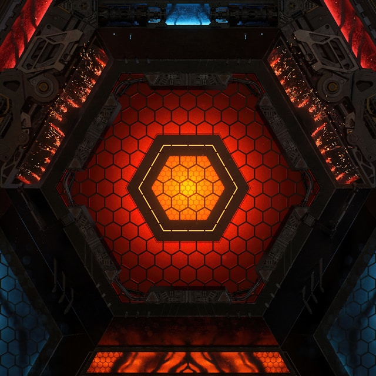
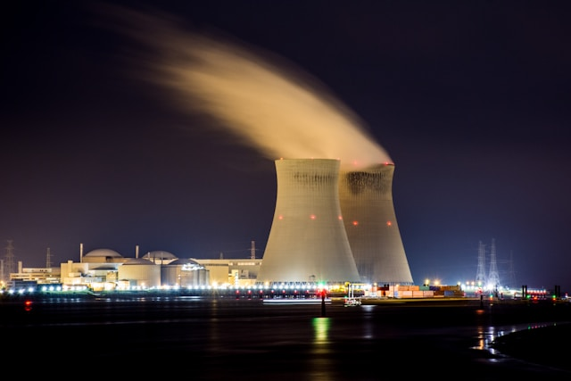
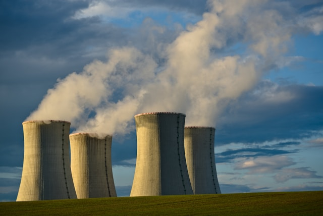

Ez egy kísérleti reaktor ami uránium-dioxid rudakat foglal héliummal töltött edzett acél csőbe és ezekkel a fűtőelemekkel termel hőt.
A hő termelését bórból készült szabályzó rudak irányítják, moderálják.
Képek erőműveinkről.


A képek csak illusztrációk. (FORRÁS: UNSPLASH)
Erőműveink világszerte.
| Alapítás | Erőmű neve | Hol található |
|---|---|---|
| 2025-2030 | Paksi Kísérleti Reaktor Program "Nuxus" átmeneti épülete | Paks, Magyarország |
| 2014-2020 | Fjodor Ivanovics Tolbuhin Atomerőmű | Baja, Magyarország |
| 2013-2020 | Unkarin liittovaltion voimalaitos | Lisalmi, Finnország |
| 2009- | Szerb Alsóbbfokú Elektromos Termelőerőmű | Златибор (Zlatibor), Szerbia |
| 2005- | Kelet-Winx-i Atomerőmű | Piura, Peru |
Az állapotuk így marad amíg le nem szerelik az erőműveket, vagy amíg a települések le nem iratkoznak a programról.
Itt iratkozhat fel a programra! Munkatársaink 5 munkanapon belül értékelik kérelmét.